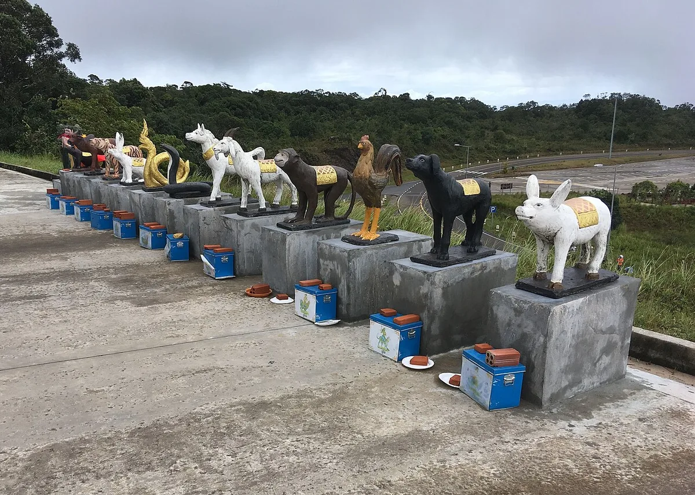
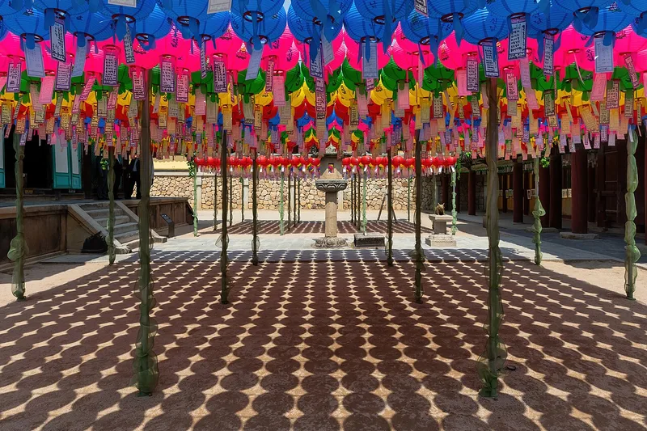
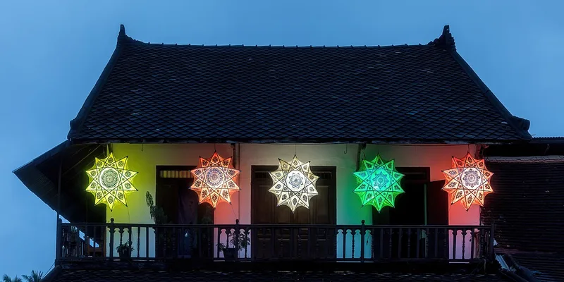
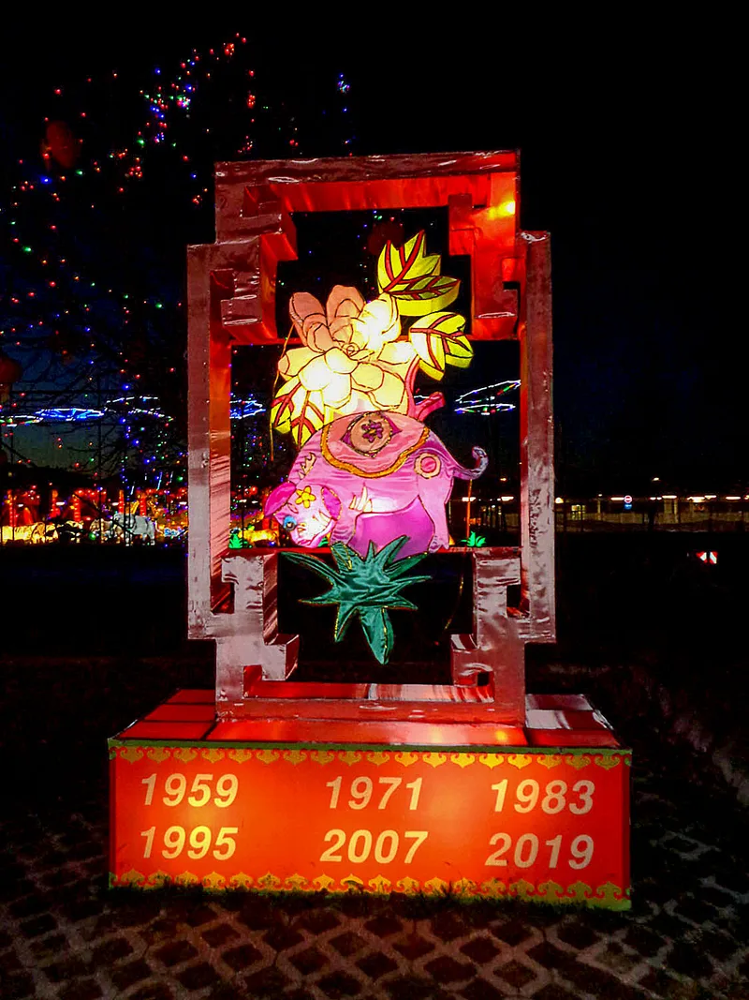

Lucky Colors
Lucky Colors for 2027 by Chinese Zodiac Sign
Every Chinese zodiac sign has its own lucky colors, and 2027, the Year of the Fire Goat, adds a theme of its own: red, the traditional color of Fire. Here are the colors for all twelve signs, where they come from, and easy ways to enjoy them.

Lucky colors for all 12 signs
The chart shows each sign's lucky colors as they appear in our zodiac sign checker and our animal guides. The last column is a reminder of how each sign is traditionally read in the Fire Goat year, taken from our 2027 predictions.
| Sign | Lucky colors | In 2027 (our reading) |
|---|---|---|
| Rat | BlueGoldGreen | Neutral |
| Ox | WhiteYellowGreen | Clash year |
| Tiger | BlueGrayOrange | Neutral |
| Rabbit | PinkRedPurple | Same triangle as the Goat |
| Dragon | GoldSilverGray | Neutral |
| Snake | BlackRedYellow | Neutral |
| Horse | YellowGreenPurple | Supportive match |
| Goat | GreenRedPurple | Own year (ben ming nian) |
| Monkey | WhiteGoldBlue | Neutral |
| Rooster | GoldBrownYellow | Neutral |
| Dog | RedGreenPurple | Neutral |
| Pig | YellowGrayBrown | Same triangle as the Goat |
Green and yellow are the most common colors in the chart: each is listed for five signs. Red, purple and gold each appear for four signs, and red is already on the list of the Rabbit, the Snake, the Goat and the Dog.
The same colors every year
A sign's lucky colors do not change from year to year. They are traditional associations that belong to the animal itself, so a Rat born in 1984 and a Rat born in 2020 share the same colors, in 2027 and in every other year. That is why the checker shows the same colors all year round.
Lucky-color lists are not standardised, either. Books, websites and fortune tellers often give different colors for the same animal, as our guide to the Horse's lucky colors explains. Sometimes they agree: for the Goat, Wikipedia's article on the sign gives green, red and purple, the same three colors as our list.
What does change is the theme of the year. Every Chinese year has an element as well as an animal, and each element has a traditional color. For 2027, that color is red.
Fire, the element of 2027, and its color
The Year of the Goat begins at Lunar New Year on 6 February 2027 and runs until 25 January 2028. The Hong Kong Observatory's calendar for 2027 names it the Ding-wei year. Wei is the Earthly Branch of the Goat, and Ding, as our Fire element guide explains, is the yin form of Fire. That is why 2027 is called a Fire Goat year.
In the five-element tradition, called wuxing, each element is linked with a color. Wikipedia's article on wuxing and the New World Encyclopedia give the same basic set: green or blue-green for Wood, red for Fire, yellow for Earth, white for Metal and black for Water. One traditional table in Wikipedia's article also gives orange as an in-between color for Fire.
So in this tradition, red is the color of the year's element. Think of it as a theme for 2027 that you can add to your own colors, not a replacement for them.
What red means in Chinese tradition
Red was a lucky color long before 2027. Wikipedia's article on color in Chinese culture says red is associated with good fortune, wealth and happiness, and with fire. It is the traditional color of Chinese New Year and other celebrations, including weddings, and the red of a lucky-money envelope symbolises good luck.
Context matters, though. The same article notes that red is traditionally kept away from funerals, because it stands for happiness, and that white is the traditional color of mourning. If white is one of your lucky colors, as it is for the Ox and the Monkey, it works well in everyday clothes; for a festive visit you might pair it with something brighter.
Other colors in the chart have their own meanings in the same tradition. Yellow is described as a prestigious color and a sign of good luck, and qing, the word for blue-green, was associated with health, prosperity and harmony.

Goats in their own year
For people born in a Goat year, 2027 is their own zodiac year, called ben ming nian. The Goat's lucky colors are already green, red and purple, so red fits a Goat's wardrobe twice over this year: as a sign color and as the color of the year's element.
There is also a separate custom for your own year: wearing red. A student interviewed for the University of Southern California's Digital Folklore Archives, born in a year of the Ram, described their mother wearing red throughout her zodiac year, and explained the belief that wearing red during ben ming nian “makes the luck stronger and gives you a good year.” Customs like this vary from family to family. Read more in our Goat horoscope for 2027.
Easy ways to use your colors in 2027
Lucky colors work best as a small, cheerful habit. Here are some ideas, from everyday things to special occasions:
- Clothes: a shirt, scarf or dress in one of your colors for a first meeting, an interview or a Lunar New Year visit.
- Accessories: a phone case, wallet, bag, watch strap or hair tie, which you see every day without changing your whole outfit.
- Home: cushions, a tablecloth, flowers or a lantern in your colors, or in red for the New Year season.
- Work and study: a notebook, pen, folder or phone wallpaper in your color, as a small reminder of a goal.
- Mix in the year: combine one of your sign's colors with a touch of red. Wikipedia notes that in Chinese tradition yellow is sometimes paired with red in place of gold, a combination that suits the Ox, Snake, Horse, Rooster and Pig.
None of this guarantees good luck. A color cannot change what happens to you, but it can be a pleasant reminder to start the day with a good intention, and that is the spirit in which the tradition is best enjoyed.

Check your sign before you choose
Your colors follow your zodiac animal, and the animal follows Lunar New Year, not 1 January. A baby born between 1 January and 5 February 2027 is still a Horse, with the Horse's colors; a baby born from 6 February 2027 is a Goat.
Our zodiac sign checker uses the exact Lunar New Year date for every year and shows your lucky colors with your result. For a color that changes every day, see the daily fortune.

Frequently asked questions
What are the lucky colors for each zodiac sign in 2027?
In our guides: Rat blue, gold and green; Ox white, yellow and green; Tiger blue, gray and orange; Rabbit pink, red and purple; Dragon gold, silver and gray; Snake black, red and yellow; Horse yellow, green and purple; Goat green, red and purple; Monkey white, gold and blue; Rooster gold, brown and yellow; Dog red, green and purple; Pig yellow, gray and brown.
Do lucky colors change every year?
No. Each sign's lucky colors are traditional associations that stay the same every year. What changes is the year's element: 2027 is a Fire year, and Fire's traditional color is red.
Why is red linked with 2027?
2027 is the Ding-wei year, a Fire Goat year. In the five-element tradition Fire's color is red, and red is also the traditional color of Chinese New Year and other celebrations.
What are the Goat's lucky colors?
Green, red and purple. Wikipedia's article on the Goat gives the same three. 2027 is the Goat's own year, ben ming nian, when some people follow the custom of wearing red.
Will wearing my lucky color bring good luck?
There is no evidence that a color changes anyone's luck. Lucky colors are a cultural tradition: enjoy them as a reminder of a good intention, not as a promise.
Sources and further reading
- Wikipedia: “Wuxing (Chinese philosophy)” — the five phases and their traditional colours, with red for Fire, blue-green for Wood, yellow for Earth, white for Metal and black for Water, and orange as Fire's in-between colour in the Huainanzi and Yueling table.
- New World Encyclopedia: “Wu xing” — the colour, season and direction of each element: green for Wood, red for Fire, yellow for Earth, white for Metal and blue or black for Water.
- Wikipedia: “Color in Chinese culture” — red as a colour of good fortune, wealth and happiness linked with fire; red at Chinese New Year, weddings and on red envelopes and its absence at funerals; white as the colour of mourning; the meanings of yellow and qing; yellow paired with red in place of gold.
- Hong Kong Observatory: Gregorian-Lunar Calendar Conversion Table of 2027 — 2027 is the Ding-wei year of the Goat, and the first lunar month begins on 6 February 2027.
- Wikipedia: “Goat (zodiac)” — lists 2027 (6 February 2027 – 25 January 2028) as a Fire Goat year and gives green, red and purple as the Goat's lucky colours.
- USC Digital Folklore Archives: “Wear red during your zodiac year” — a first-hand account of the custom of wearing red during ben ming nian, your own zodiac year, and the belief that it makes the luck stronger.
Lucky colors are a traditional Chinese zodiac reading for culture and entertainment, not a scientific prediction, and the photos are from Wikimedia Commons under the free licences named under each picture.
Explore more: Lucky colors for the Horse · The Fire element · Chinese zodiac 2027 predictions · Goat horoscope 2027
← Back to the MyBirthSign Blogពណ៌សំណាង
ពណ៌សំណាងឆ្នាំ 2027 តាមរាសីចិននីមួយៗ
រាសីចិននីមួយៗ មានពណ៌សំណាងរៀងៗខ្លួន ហើយឆ្នាំ 2027 ដែលជាឆ្នាំមមែ ធាតុភ្លើង បន្ថែមប្រធានបទមួយរបស់ខ្លួនទៀត៖ ពណ៌ក្រហម ដែលជាពណ៌តាមប្រពៃណីនៃធាតុភ្លើង។ ខាងក្រោមនេះ ជាពណ៌សម្រាប់រាសីទាំងដប់ពីរ ប្រភពនៃពណ៌ទាំងនោះ និងវិធីងាយៗដើម្បីរីករាយជាមួយពណ៌ទាំងនោះ។
ពណ៌សំណាងសម្រាប់រាសីទាំង 12
តារាងនេះបង្ហាញពណ៌សំណាងរបស់រាសីនីមួយៗ ដូចដែលមាននៅក្នុងកម្មវិធីពិនិត្យរាសី និងមគ្គុទ្ទេសក៍សត្វរាសីរបស់យើង។ ជួរឈរចុងក្រោយ ជាការរំលឹកអំពីរបៀបដែលរាសីនីមួយៗត្រូវបានអានតាមប្រពៃណី ក្នុងឆ្នាំមមែ ធាតុភ្លើង ដោយដកស្រង់ពីការព្យាករណ៍ឆ្នាំ 2027របស់យើង។
| រាសី | ពណ៌សំណាង | ក្នុងឆ្នាំ 2027 (តាមការអានរបស់យើង) |
|---|---|---|
| ជូត | ខៀវមាសបៃតង | ឆ្នាំអព្យាក្រឹត |
| ឆ្លូវ | សលឿងបៃតង | ឆ្នាំប៉ះទង្គិច |
| ខាល | ខៀវប្រផេះទឹកក្រូច | ឆ្នាំអព្យាក្រឹត |
| ថោះ | ផ្កាឈូកក្រហមស្វាយ | ត្រីកោណតែមួយជាមួយមមែ |
| រោង | មាសប្រាក់ប្រផេះ | ឆ្នាំអព្យាក្រឹត |
| ម្សាញ់ | ខ្មៅក្រហមលឿង | ឆ្នាំអព្យាក្រឹត |
| មមី | លឿងបៃតងស្វាយ | គូដែលគាំទ្រគ្នា |
| មមែ | បៃតងក្រហមស្វាយ | ឆ្នាំរាសីខ្លួនឯង (ben ming nian) |
| វក | សមាសខៀវ | ឆ្នាំអព្យាក្រឹត |
| រកា | មាសត្នោតលឿង | ឆ្នាំអព្យាក្រឹត |
| ច | ក្រហមបៃតងស្វាយ | ឆ្នាំអព្យាក្រឹត |
| កុរ | លឿងប្រផេះត្នោត | ត្រីកោណតែមួយជាមួយមមែ |
ពណ៌បៃតង និងពណ៌លឿង ជាពណ៌ដែលឃើញញឹកញាប់បំផុតក្នុងតារាង៖ ពណ៌នីមួយៗមានសម្រាប់រាសីប្រាំ។ ពណ៌ក្រហម ស្វាយ និងមាស មានសម្រាប់រាសីបួនរៀងៗខ្លួន ហើយពណ៌ក្រហមមានរួចហើយក្នុងបញ្ជីរបស់ថោះ ម្សាញ់ មមែ និងច។
ពណ៌ដដែលរៀងរាល់ឆ្នាំ
ពណ៌សំណាងរបស់រាសីមួយ មិនផ្លាស់ប្ដូរពីឆ្នាំមួយទៅឆ្នាំមួយទេ។ វាជាការភ្ជាប់ទំនាក់ទំនងតាមប្រពៃណី ដែលជារបស់សត្វរាសីនោះផ្ទាល់ ដូច្នេះអ្នកកើតឆ្នាំជូតក្នុងឆ្នាំ 1984 និងអ្នកកើតឆ្នាំជូតក្នុងឆ្នាំ 2020 មានពណ៌ដូចគ្នា ទាំងក្នុងឆ្នាំ 2027 និងគ្រប់ឆ្នាំផ្សេងទៀត។ នេះហើយជាហេតុដែលកម្មវិធីពិនិត្យរាសី បង្ហាញពណ៌ដដែលពេញមួយឆ្នាំ។
បញ្ជីពណ៌សំណាងក៏មិនមានស្តង់ដាររួមដែរ។ សៀវភៅ គេហទំព័រ និងគ្រូទាយ ច្រើនតែផ្ដល់ពណ៌ខុសៗគ្នា សម្រាប់សត្វតែមួយ ដូចដែលមគ្គុទ្ទេសក៍របស់យើងស្ដីពីពណ៌សំណាងរបស់មមី បានពន្យល់។ ជួនកាលបញ្ជីទាំងនោះក៏ដូចគ្នាដែរ៖ សម្រាប់មមែ អត្ថបទរបស់ Wikipedia ស្ដីពីរាសីនេះ ផ្ដល់ពណ៌បៃតង ក្រហម និងស្វាយ ដែលជាពណ៌បីដូចគ្នានឹងបញ្ជីរបស់យើង។
អ្វីដែលផ្លាស់ប្ដូរ គឺប្រធានបទនៃឆ្នាំ។ ឆ្នាំចិននីមួយៗ មានធាតុមួយ ក្រៅពីសត្វរាសី ហើយធាតុនីមួយៗមានពណ៌តាមប្រពៃណីមួយ។ សម្រាប់ឆ្នាំ 2027 ពណ៌នោះគឺពណ៌ក្រហម។
ភ្លើង ជាធាតុនៃឆ្នាំ 2027 និងពណ៌របស់វា
ឆ្នាំមមែ ចាប់ផ្ដើមនៅថ្ងៃចូលឆ្នាំចិន ថ្ងៃទី 06/02/2027 ហើយបន្តរហូតដល់ថ្ងៃទី 25/01/2028។ ប្រតិទិនឆ្នាំ 2027 របស់ Hong Kong Observatory ហៅឆ្នាំនេះថា ឆ្នាំ Ding-wei។ Wei ជាមែកផែនដីរបស់មមែ ហើយ Ding ជាទម្រង់យិននៃធាតុភ្លើង ដូចដែលមគ្គុទ្ទេសក៍ធាតុភ្លើងរបស់យើងពន្យល់។ នេះហើយជាហេតុដែលឆ្នាំ 2027 ត្រូវបានហៅថា ឆ្នាំមមែ ធាតុភ្លើង។
ក្នុងប្រពៃណីធាតុទាំងប្រាំ ដែលហៅថា wuxing ធាតុនីមួយៗភ្ជាប់នឹងពណ៌មួយ។ អត្ថបទរបស់ Wikipedia ស្ដីពី wuxing និង New World Encyclopedia ផ្ដល់សំណុំពណ៌មូលដ្ឋានដូចគ្នា៖ ពណ៌បៃតង ឬខៀវបៃតង សម្រាប់ឈើ ពណ៌ក្រហមសម្រាប់ភ្លើង ពណ៌លឿងសម្រាប់ដី ពណ៌សសម្រាប់លោហធាតុ និងពណ៌ខ្មៅសម្រាប់ទឹក។ តារាងប្រពៃណីមួយ ក្នុងអត្ថបទរបស់ Wikipedia ក៏ផ្ដល់ពណ៌ទឹកក្រូច ជាពណ៌កណ្ដាលសម្រាប់ធាតុភ្លើងដែរ។
ដូច្នេះ ក្នុងប្រពៃណីនេះ ពណ៌ក្រហមជាពណ៌នៃធាតុរបស់ឆ្នាំ។ សូមគិតថា វាជាប្រធានបទសម្រាប់ឆ្នាំ 2027 ដែលអ្នកអាចបន្ថែមលើពណ៌ផ្ទាល់ខ្លួនរបស់អ្នក មិនមែនជាពណ៌ជំនួសពណ៌ទាំងនោះទេ។
អត្ថន័យនៃពណ៌ក្រហម ក្នុងប្រពៃណីចិន
ពណ៌ក្រហមជាពណ៌សំណាង តាំងពីយូរមុនឆ្នាំ 2027 ទៅទៀត។ អត្ថបទរបស់ Wikipedia ស្ដីពីពណ៌ក្នុងវប្បធម៌ចិន និយាយថា ពណ៌ក្រហមភ្ជាប់នឹងសំណាងល្អ ទ្រព្យសម្បត្តិ និងសុភមង្គល ព្រមទាំងនឹងភ្លើង។ វាជាពណ៌តាមប្រពៃណីនៃបុណ្យចូលឆ្នាំចិន និងពិធីអបអរផ្សេងៗ រួមទាំងពិធីមង្គលការ ហើយពណ៌ក្រហមនៃអាំងប៉ាវ ឬស្រោមសំបុត្រដាក់ប្រាក់សំណាង ជានិមិត្តរូបនៃសំណាងល្អ។
ប៉ុន្តែ បរិបទក៏សំខាន់ដែរ។ អត្ថបទដដែលកត់សម្គាល់ថា តាមប្រពៃណី គេមិនប្រើពណ៌ក្រហមនៅពិធីបុណ្យសពទេ ព្រោះវាតំណាងឱ្យសេចក្ដីរីករាយ ហើយពណ៌សជាពណ៌តាមប្រពៃណីនៃការកាន់ទុក្ខ។ ប្រសិនបើពណ៌សជាពណ៌សំណាងមួយរបស់អ្នក ដូចចំពោះឆ្លូវ និងវក វាសាកសមល្អជាមួយសម្លៀកបំពាក់ប្រចាំថ្ងៃ ចំណែកសម្រាប់ការទៅលេងគ្នាក្នុងឱកាសបុណ្យ អ្នកអាចផ្គូផ្គងវាជាមួយពណ៌ដែលភ្លឺជាងនេះ។
ពណ៌ផ្សេងទៀតក្នុងតារាង ក៏មានអត្ថន័យរៀងៗខ្លួន ក្នុងប្រពៃណីដដែល។ ពណ៌លឿងត្រូវបានពិពណ៌នាថា ជាពណ៌ថ្លៃថ្នូរ និងជាសញ្ញានៃសំណាងល្អ ហើយ qing ដែលជាពាក្យសម្រាប់ពណ៌ខៀវបៃតង ត្រូវបានភ្ជាប់នឹងសុខភាព វិបុលភាព និងភាពសុខដុម។
មមែ ក្នុងឆ្នាំរាសីខ្លួនឯង
សម្រាប់អ្នកកើតឆ្នាំមមែ ឆ្នាំ 2027 ជាឆ្នាំរាសីខ្លួនឯង ដែលហៅថា ben ming nian។ ពណ៌សំណាងរបស់មមែ គឺពណ៌បៃតង ក្រហម និងស្វាយស្រាប់ហើយ ដូច្នេះក្នុងឆ្នាំនេះ ពណ៌ក្រហមសាកសមនឹងសម្លៀកបំពាក់របស់អ្នកកើតឆ្នាំមមែ ពីរដង៖ ទាំងជាពណ៌នៃរាសី និងជាពណ៌នៃធាតុរបស់ឆ្នាំ។
ក៏មានទំនៀមមួយផ្សេងទៀត សម្រាប់ឆ្នាំរាសីខ្លួនឯង៖ ការស្លៀកពាក់ពណ៌ក្រហម។ និស្សិតម្នាក់ ដែលបានផ្ដល់បទសម្ភាសន៍ដល់ Digital Folklore Archives របស់ University of Southern California ហើយកើតក្នុងឆ្នាំចៀមឈ្មោល បានរៀបរាប់ថា ម្ដាយរបស់គាត់ស្លៀកពាក់ពណ៌ក្រហម ពេញមួយឆ្នាំរាសីខ្លួនឯងរបស់ម្ដាយ ហើយបានពន្យល់ពីជំនឿថា ការស្លៀកពាក់ពណ៌ក្រហមក្នុងឆ្នាំ ben ming nian «ធ្វើឱ្យសំណាងកាន់តែខ្លាំង និងផ្ដល់ឱ្យអ្នកនូវឆ្នាំដ៏ល្អមួយ»។ ទំនៀមបែបនេះ ខុសគ្នាពីគ្រួសារមួយទៅគ្រួសារមួយ។ សូមអានបន្ថែមក្នុងជោគជតារាសីមមែ ឆ្នាំ 2027របស់យើង។
វិធីងាយៗ ដើម្បីប្រើពណ៌របស់អ្នកក្នុងឆ្នាំ 2027
ពណ៌សំណាងសាកសមបំផុត នៅពេលប្រើជាទម្លាប់តូចមួយដែលនាំឱ្យរីករាយ។ នេះជាគំនិតខ្លះៗ ចាប់ពីរបស់ប្រើប្រាស់ប្រចាំថ្ងៃ រហូតដល់ឱកាសពិសេស៖
- សម្លៀកបំពាក់៖ អាវ កន្សែងបង់ក ឬរ៉ូប ក្នុងពណ៌មួយរបស់អ្នក សម្រាប់ការជួបគ្នាលើកដំបូង ការសម្ភាសការងារ ឬការទៅលេងគ្នាក្នុងឱកាសចូលឆ្នាំចិន។
- គ្រឿងតុបតែងខ្លួន៖ ស្រោមទូរស័ព្ទ កាបូបលុយ កាបូបយួរ ខ្សែនាឡិកា ឬខ្សែចងសក់ ដែលអ្នកឃើញរាល់ថ្ងៃ ដោយមិនចាំបាច់ផ្លាស់ប្ដូរសម្លៀកបំពាក់ទាំងមូល។
- ផ្ទះ៖ ខ្នើយ កម្រាលតុ ផ្កា ឬចង្កៀងគោម ក្នុងពណ៌របស់អ្នក ឬពណ៌ក្រហមសម្រាប់រដូវចូលឆ្នាំ។
- ការងារ និងការសិក្សា៖ សៀវភៅកត់ត្រា ប៊ិច ថតឯកសារ ឬរូបផ្ទៃទូរស័ព្ទ ក្នុងពណ៌របស់អ្នក ជាការរំលឹកតូចមួយអំពីគោលដៅ។
- បញ្ចូលពណ៌នៃឆ្នាំ៖ ផ្សំពណ៌មួយនៃរាសីរបស់អ្នក ជាមួយពណ៌ក្រហមបន្តិច។ Wikipedia កត់សម្គាល់ថា ក្នុងប្រពៃណីចិន ជួនកាលគេផ្គូផ្គងពណ៌លឿងជាមួយពណ៌ក្រហម ជំនួសឱ្យពណ៌មាស ដែលជាការផ្សំមួយសាកសមនឹងឆ្លូវ ម្សាញ់ មមី រកា និងកុរ។
ទាំងនេះ មិនធានាសំណាងល្អទេ។ ពណ៌មួយមិនអាចផ្លាស់ប្ដូរអ្វីដែលកើតឡើងចំពោះអ្នកបានទេ ប៉ុន្តែវាអាចជាការរំលឹកដ៏រីករាយមួយ ឱ្យចាប់ផ្ដើមថ្ងៃថ្មីដោយចេតនាល្អ ហើយនោះហើយជាស្មារតីដ៏ល្អបំផុត ក្នុងការរីករាយជាមួយប្រពៃណីនេះ។
ពិនិត្យរាសីរបស់អ្នក មុននឹងជ្រើសរើស
ពណ៌របស់អ្នក អាស្រ័យលើសត្វរាសីរបស់អ្នក ហើយសត្វរាសី អាស្រ័យលើថ្ងៃចូលឆ្នាំចិន មិនមែនថ្ងៃទី 1 ខែមករាទេ។ ទារកដែលកើតចន្លោះថ្ងៃទី 01/01/2027 ដល់ថ្ងៃទី 05/02/2027 នៅតែជាអ្នកកើតឆ្នាំមមី ដែលមានពណ៌របស់មមី ចំណែកទារកដែលកើតចាប់ពីថ្ងៃទី 06/02/2027 ជាអ្នកកើតឆ្នាំមមែ។
កម្មវិធីពិនិត្យរាសីរបស់យើង ប្រើកាលបរិច្ឆេទចូលឆ្នាំចិនពិតប្រាកដ សម្រាប់គ្រប់ឆ្នាំ ហើយបង្ហាញពណ៌សំណាងរបស់អ្នក ជាមួយលទ្ធផល។ សម្រាប់ពណ៌ដែលផ្លាស់ប្ដូររៀងរាល់ថ្ងៃ សូមមើលជោគជតារាសីប្រចាំថ្ងៃ។
សំណួរដែលគេសួរញឹកញាប់
តើពណ៌សំណាងសម្រាប់រាសីនីមួយៗ ក្នុងឆ្នាំ 2027 មានអ្វីខ្លះ?
តាមមគ្គុទ្ទេសក៍របស់យើង៖ ជូត ខៀវ មាស និងបៃតង; ឆ្លូវ ស លឿង និងបៃតង; ខាល ខៀវ ប្រផេះ និងទឹកក្រូច; ថោះ ផ្កាឈូក ក្រហម និងស្វាយ; រោង មាស ប្រាក់ និងប្រផេះ; ម្សាញ់ ខ្មៅ ក្រហម និងលឿង; មមី លឿង បៃតង និងស្វាយ; មមែ បៃតង ក្រហម និងស្វាយ; វក ស មាស និងខៀវ; រកា មាស ត្នោត និងលឿង; ច ក្រហម បៃតង និងស្វាយ; កុរ លឿង ប្រផេះ និងត្នោត។
តើពណ៌សំណាងផ្លាស់ប្ដូររៀងរាល់ឆ្នាំឬទេ?
ទេ។ ពណ៌សំណាងរបស់រាសីនីមួយៗ ជាការភ្ជាប់ទំនាក់ទំនងតាមប្រពៃណី ដែលនៅដដែលរៀងរាល់ឆ្នាំ។ អ្វីដែលផ្លាស់ប្ដូរ គឺធាតុនៃឆ្នាំ៖ ឆ្នាំ 2027 ជាឆ្នាំធាតុភ្លើង ហើយពណ៌តាមប្រពៃណីនៃធាតុភ្លើង គឺពណ៌ក្រហម។
ហេតុអ្វីពណ៌ក្រហមភ្ជាប់នឹងឆ្នាំ 2027?
ឆ្នាំ 2027 ជាឆ្នាំ Ding-wei ពោលគឺឆ្នាំមមែ ធាតុភ្លើង។ ក្នុងប្រពៃណីធាតុទាំងប្រាំ ពណ៌នៃធាតុភ្លើងគឺពណ៌ក្រហម ហើយពណ៌ក្រហមក៏ជាពណ៌តាមប្រពៃណីនៃបុណ្យចូលឆ្នាំចិន និងពិធីអបអរផ្សេងៗទៀតដែរ។
តើពណ៌សំណាងរបស់មមែ មានអ្វីខ្លះ?
ពណ៌បៃតង ក្រហម និងស្វាយ។ អត្ថបទរបស់ Wikipedia ស្ដីពីមមែ ក៏ផ្ដល់ពណ៌បីដូចគ្នានេះដែរ។ ឆ្នាំ 2027 ជាឆ្នាំរាសីខ្លួនឯងរបស់មមែ (ben ming nian) ដែលអ្នកខ្លះអនុវត្តទំនៀមស្លៀកពាក់ពណ៌ក្រហម។
តើការស្លៀកពាក់ពណ៌សំណាងរបស់ខ្ញុំ នាំមកនូវសំណាងល្អឬទេ?
គ្មានភស្តុតាងថា ពណ៌មួយផ្លាស់ប្ដូរសំណាងរបស់នរណាម្នាក់ទេ។ ពណ៌សំណាងជាប្រពៃណីវប្បធម៌៖ សូមរីករាយជាមួយវា ជាការរំលឹកអំពីចេតនាល្អ មិនមែនជាការសន្យាទេ។
ប្រភព និងឯកសារអានបន្ថែម
- Wikipedia: “Wuxing (Chinese philosophy)” — ដំណាក់កាលទាំងប្រាំ និងពណ៌តាមប្រពៃណីរបស់វា៖ ពណ៌ក្រហមសម្រាប់ភ្លើង ខៀវបៃតងសម្រាប់ឈើ លឿងសម្រាប់ដី សសម្រាប់លោហធាតុ និងខ្មៅសម្រាប់ទឹក ព្រមទាំងពណ៌ទឹកក្រូច ជាពណ៌កណ្ដាលនៃធាតុភ្លើង ក្នុងតារាង Huainanzi និង Yueling។
- New World Encyclopedia: “Wu xing” — ពណ៌ រដូវ និងទិសនៃធាតុនីមួយៗ៖ បៃតងសម្រាប់ឈើ ក្រហមសម្រាប់ភ្លើង លឿងសម្រាប់ដី សសម្រាប់លោហធាតុ និងខៀវ ឬខ្មៅសម្រាប់ទឹក។
- Wikipedia: “Color in Chinese culture” — ពណ៌ក្រហម ជាពណ៌នៃសំណាងល្អ ទ្រព្យសម្បត្តិ និងសុភមង្គល ដែលភ្ជាប់នឹងភ្លើង៖ ពណ៌ក្រហមនៅបុណ្យចូលឆ្នាំចិន ពិធីមង្គលការ និងលើអាំងប៉ាវ និងការមិនប្រើវានៅពិធីបុណ្យសព ពណ៌សជាពណ៌នៃការកាន់ទុក្ខ អត្ថន័យនៃពណ៌លឿង និង qing និងការផ្គូផ្គងពណ៌លឿងជាមួយពណ៌ក្រហម ជំនួសពណ៌មាស។
- Hong Kong Observatory: Gregorian-Lunar Calendar Conversion Table of 2027 — ឆ្នាំ 2027 ជាឆ្នាំ Ding-wei ឆ្នាំមមែ ហើយខែទីមួយតាមចន្ទគតិ ចាប់ផ្ដើមនៅថ្ងៃទី 06/02/2027។
- Wikipedia: “Goat (zodiac)” — រៀបរាប់ឆ្នាំ 2027 (06/02/2027 – 25/01/2028) ជាឆ្នាំមមែ ធាតុភ្លើង ហើយផ្ដល់ពណ៌បៃតង ក្រហម និងស្វាយ ជាពណ៌សំណាងរបស់មមែ។
- USC Digital Folklore Archives: “Wear red during your zodiac year” — ការរៀបរាប់ដោយផ្ទាល់មួយ អំពីទំនៀមស្លៀកពាក់ពណ៌ក្រហមក្នុងឆ្នាំ ben ming nian ឬឆ្នាំរាសីខ្លួនឯង និងជំនឿថា វាធ្វើឱ្យសំណាងកាន់តែខ្លាំង។
ពណ៌សំណាង ជាការអានរាសីចិនតាមប្រពៃណី សម្រាប់វប្បធម៌ និងការកម្សាន្ត មិនមែនជាការព្យាករណ៍បែបវិទ្យាសាស្ត្រទេ ហើយរូបថតទាំងនេះ មកពី Wikimedia Commons ក្រោមអាជ្ញាប័ណ្ណសេរី ដែលបានបញ្ជាក់នៅក្រោមរូបនីមួយៗ។
អានបន្ថែម៖ ពណ៌សំណាងរបស់មមី · ធាតុភ្លើង · ការព្យាករណ៍រាសីចិនឆ្នាំ 2027 · ជោគជតារាសីមមែ ឆ្នាំ 2027
← ត្រឡប់ទៅប្លុក MyBirthSign